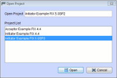
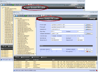
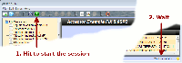
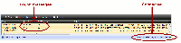
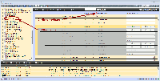
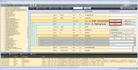
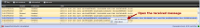
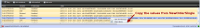
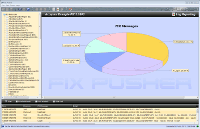

The Application starts and opens the project Acceptor Example FIX 5.0SP2. To have someone to talk to, start a second instance of FIX Pusher by hitting the "F" icon once again.
Now open the project Initiator Example FIX 5.0SP2 by selecting:
File → Open Project

Notice: Ensure that you picked up the right protocol version 5.0SP2.
Edit → Start Session
At this time the acceptor is waiting for an initiator to be connected with. Choose the initiator application and start the session the same way.
The initiator is sending a Logon FIX message to the acceptor and is receiving the Logon answer. The connection between acceptor and initiator is now established. If you do not like the heartbeat messages, adjust the filter in the message blotter.
An empty FIX message shows up in the main area. Now fill the message with the following values:
You can navigate to missing fields by hitting the warning icon beside the message name.
Name Type Number Data Type Required Value ClOrdID Field 11 String Required 000000001 Parties Component Optional NoPartyIDs Group 453 Optional 1 PartyID Field 448 String Conditionally Fill with your name PartyIDSource Field 447 Char Optional D PartyRole Field 452 Int Optional 12 Instrument Component Required Symbol Field 55 String Optional DBR 4 01/04/18 SecurityID Field 48 String Optional DE0001135341 SecurityIDSource Field 22 String Optional 4 Side Field 54 Char Required 1 TransactTime Field 60 Utctimestamp Required Fill with current time OrderQtyData Component Required OrderQty Field 38 Qty Optional 1000000 OrdType Field 40 Char Required 1 PriceType Field 423 Int Optional 1
To insert party details, hit the add button in the component Parties. Next add an entry to the group NoParties by clicking the add button in this group. Finally adjust the filter hiding all empty fields to check the message entries.
If the message contains no more errors or warnings, send it by clicking:
Notice: If the filter is set, it is not possible to add or remove groups and components.
Edit → Send Message
By right clicking the message and selecting Open FIX Message, you can inspect the message details. Now select a FIX message of type ExecutionReport from the left tree. Fill the message with the following values:
You can copy the values from the received NewOrderSingle by right clicking the message in the blotter and selecting Adopt Values.
Name Type Number Data Type Required Value OrderID Field 37 String Required 000000002 ClOrdID Field 11 String Required 000000001 Parties Component Optional NoPartyIDs Group 453 Optional 1 PartyID Field 448 String Conditionally Fill with your name PartyIDSource Field 447 Char Optional D PartyRole Field 452 Int Optional 12 ExecID Field 17 String Required 000000002 ExecType Field 150 Char Required F OrdStatus Field 39 Int Char 2 Instrument Component Required Symbol Field 55 String Optional DBR 4 01/04/18 SecurityID Field 48 String Optional DE0001135341 SecurityIDSource Field 22 String Optional 4 Side Field 54 Char Required 1 OrderQtyData Component Required OrderQty Field 38 Qty Optional 1000000 OrdType Field 40 Char Required 1 PriceType Field 423 Int Optional 1 Price Field 44 Price Optional 117.08 LeavesQty Field 151 Qty Required 0 CumQty Field 14 Qty Required 1000000 AvgPx Field 6 Price Optional 117.08 TransactTime Field 60 Utctimestamp Optional Fill with current time
If the message contains no more errors or warnings, send it by clicking:
Edit → Send Message
Extras → Open Log Report
The main area shows you a pie chart with the top 5 messages. The report is according to the filter settings of the message blotter. If you just want to see the messages you sent, adjust the filter hiding received messages.
Extras → Export to ExcelA new sheet in the selected excel file will be created, according to the filter settings of the message detail. If you just want to generate a sheet containing all filled fields, adjust the filter hiding empty fields.